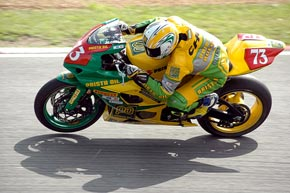
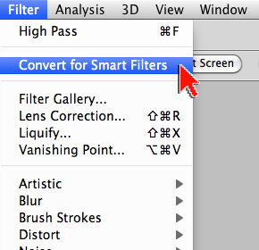
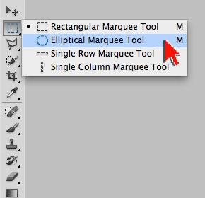
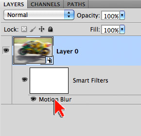
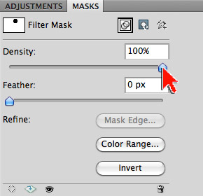
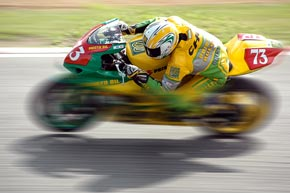

Exercise 5: Masking a Smart Filter
In this exercise we will work with a very useful Photoshop filter, the Motion Blur. We will apply the motion blur through the use of a Smart Filter, which in turn creates a Smart Object. We will then modify the Smart Filter mask and experiment with the multiple points of adjustment that are available. The combination of masking and Photoshop filters can produce some very unique visual treasures.
You will know how to:
- Generate a Smart Filter mask
- Free Transform a Smart Filter mask
- Free Transform a regular layer mask
1. Open the image to be masked ...
- Open motorcycle.jpg in Adobe Photoshop
- Source (and thanks to): M Choi Motorcycle Racer by John Edwards
- Tap the letter 'f' so you're working on a solid grey background
- Note: Tapping 'f' a second time gives you a black background
- Note: Tapping 'f' a third time takes you back to normal viewing mode
- From the Menu bar, go to File > Save As ...
- Save your file as a .psd
- a .psd (Photoshop Document) will preserve ALL your layers and settings

2. Get the image ready for masking …
- Select the Background layer
- From Menu bar, go to Filter > Convert to Smart Filters
- Note: In the layer panels, your layer is now a Smart Object
- Note: A Smart Object adds a protective shell around your original image
- Note: A Smart Filter allows for re-tweaking of a filter effect
- Note: Smart Objects/Filters are very useful and powerful. You should definitely learn more about these features (study at home)
- Save your file

3. Apply a motion blur filter …
- From the Menu bar, go to Filter > Blur > Motion Blur
- In the Motion Blur dialogue box, adjust the blur distance
- Note: A value of 50 is a good starting point for this exercise
- Note: In the Layers panel, a mask is added after you hit OK in the Motion Blur dialogue box
- Save your file

4. Mask the motion blur with a selection ...
- In the Tool bar, select the Elliptical Marque Tool
- With the Elliptical Marque Tool, create an elliptical selection over the motorcyclist's head
- Note: To create a perfect circle, hold down the SHIFT key as you create your selection
- Note: If you need to start a new selection, from the Menu bar go to Select > Deselect
- With the Smart Filter mask selected in the Layers panel, from the Menu bar, go to Edit > Fill. Choose black as the fill color
- Note: The black fill blocks the effect of the motion blur
- Note: To hide the selection, from the Menu bar go to Select > Deselect
- Save your file

5. Re-Adjust the Motion Blur ...
- In the Layers panel, double-click the Motion Blur link
- Re-adjust the Motion Blur to a higher setting
- Save your file

6. Mask density and feather ...
- Open the MASKS panel
- Experiment with the Density slider (image right)
- The Density slider controls the strength of the mask
- A Density value of 0% (slider left) reveals the Motion Blur
- Experiment with the Feather slider
- The Feather slider controls the softness of the mask edge
- To view a mask: (image right)
- On a Mac, Option-click directly on the mask thumbnail
- On a PC: Alt-click directly on the mask thumbnail
- Click the layer thumbnail to return to normal viewing
- Save your file

7. Transform the mask ...
- With the Smart Filter mask selected in the Layers panel, from the Menu Bar, go to Edit > Free Transform
- Note: Use the Free Transform handles for adjust the size and shape of your mask
- Note: Drag from within the Free Transform bounding box to adjust the position of your mask
- Note: Rotate the mask by dragging outside the Free Transform bounding box
- Demo: Free Transform a content layer mask
- Save your file
